Android Apps
Table of Contents
1 Preparation
1.1 Install Android Studio
OK をクリック。
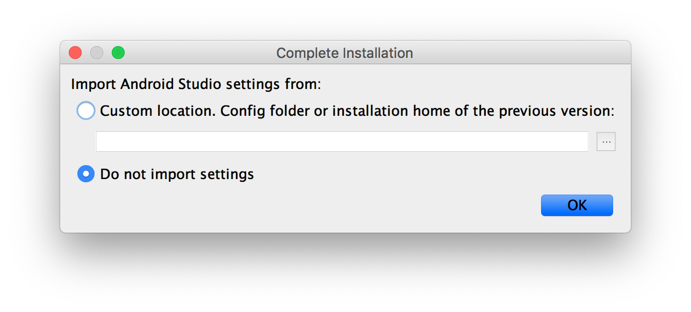
Next をクリック。
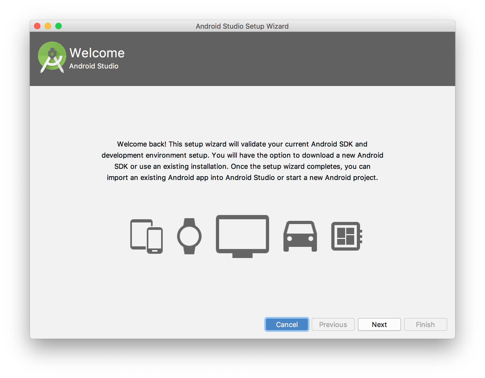
Next をクリック。
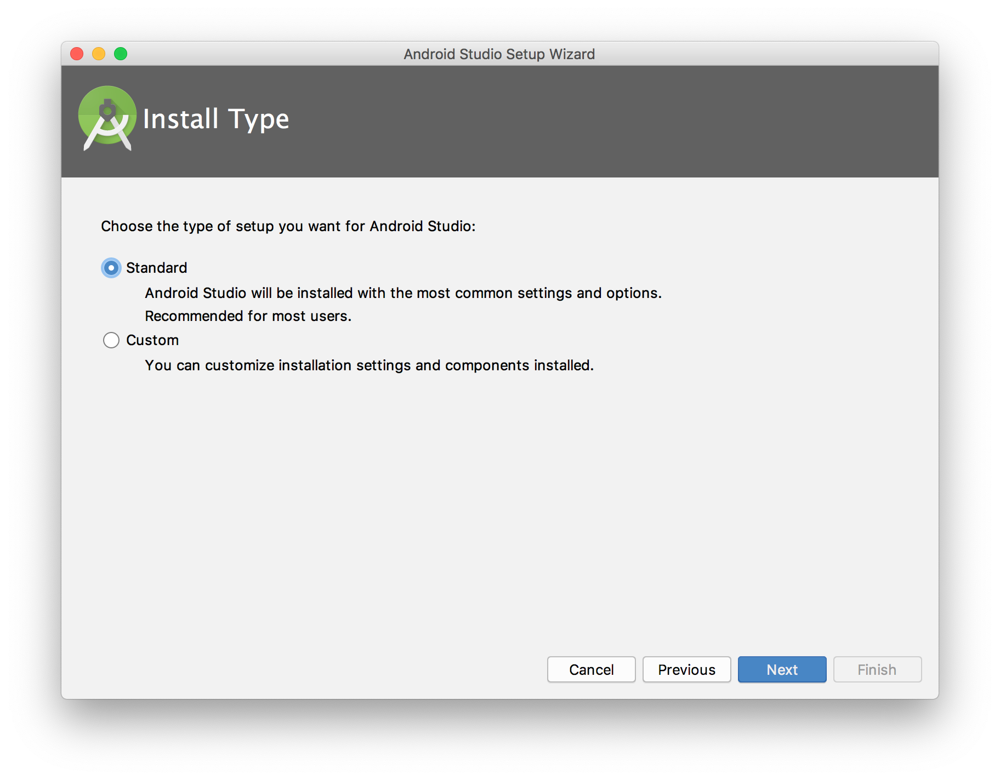
Darcula を選択して Next をクリック。
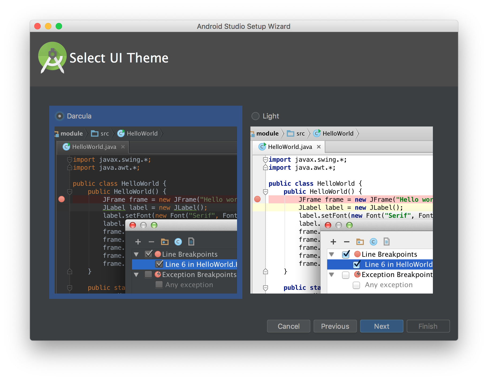
Finish をクリック。
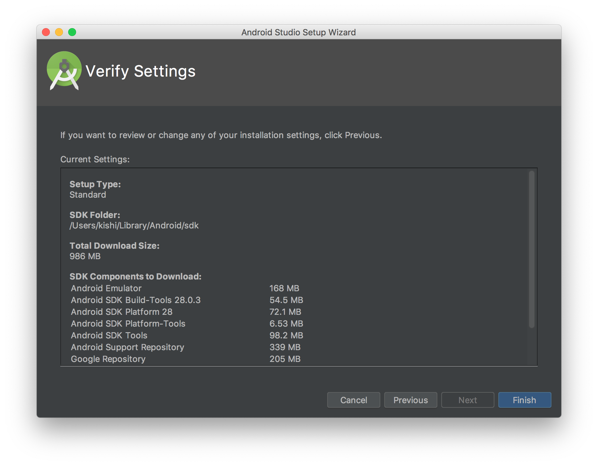
インストール中・・・。
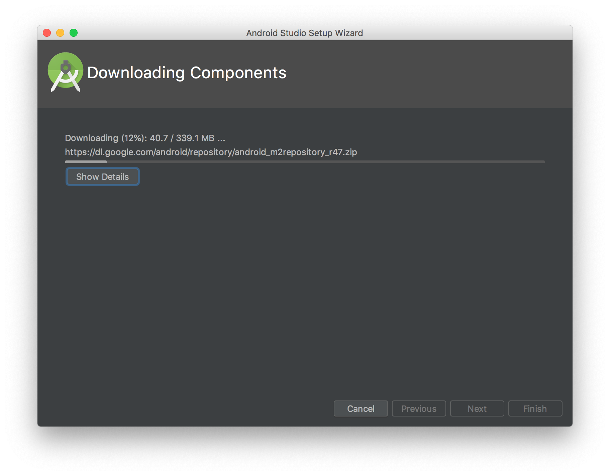
インストール完了。
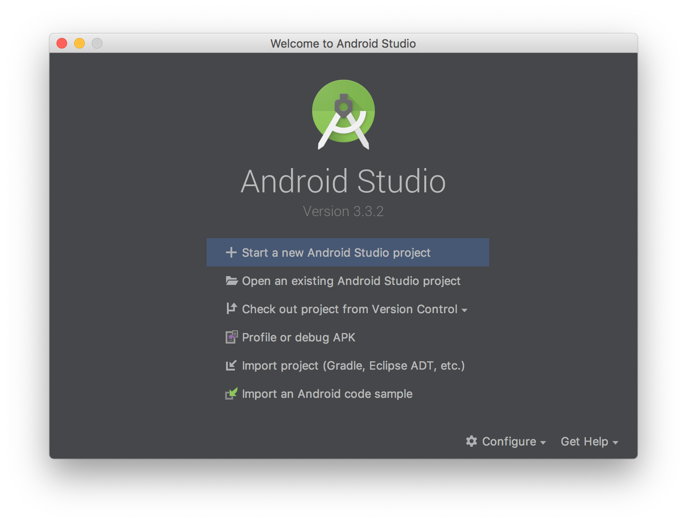
1.2 Install NDK(Native Development Kit)
メニューバーの Android Studio をクリックして、 Preferences... をクリック。
Appearance & BehaviourSystem SettingsAndroid SDKSDK Toolsタブ
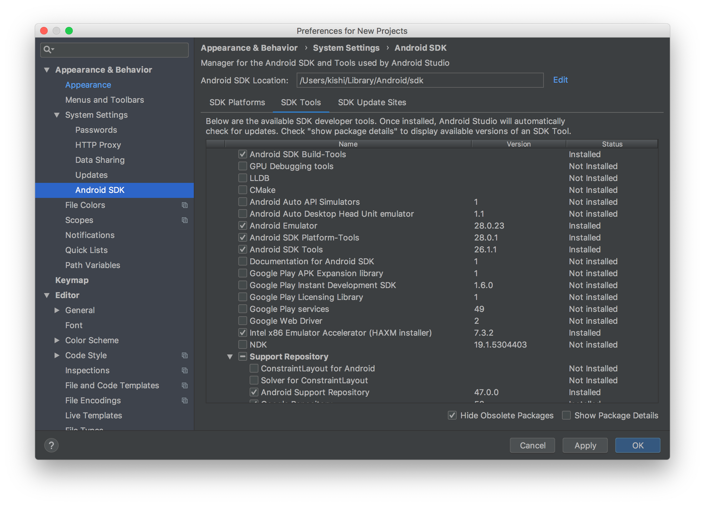
以下を選択して OK をクリック。
CMakeLLDBNDK
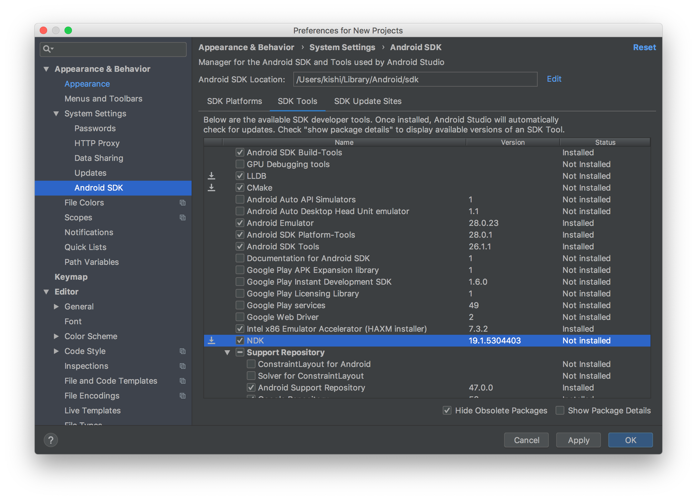
OK をクリック。
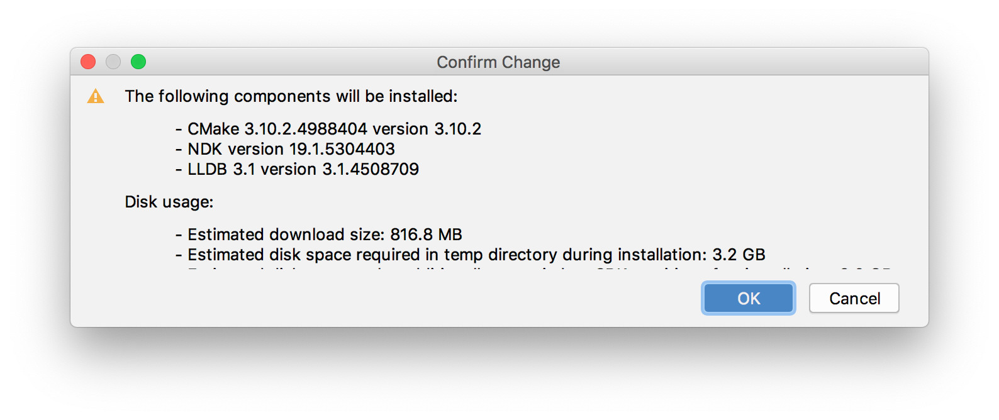
Accept を選択して Next をクリック。
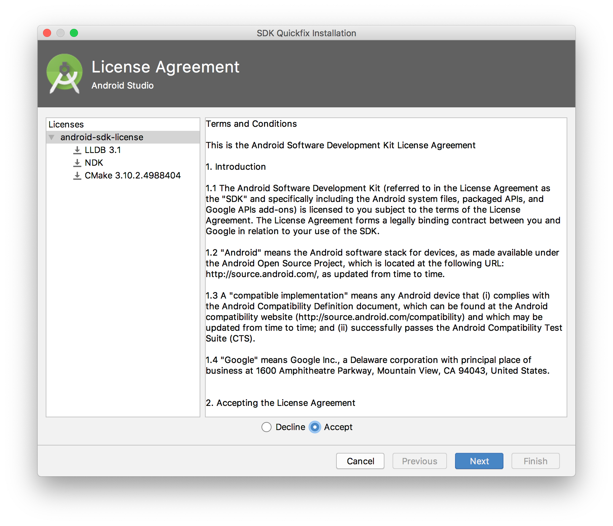
インストール中・・・。
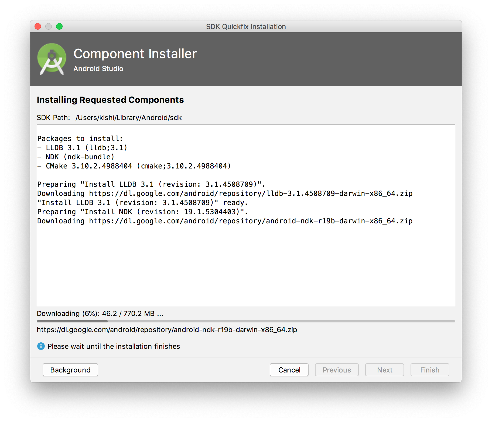
インストール完了。
Finish をクリック。
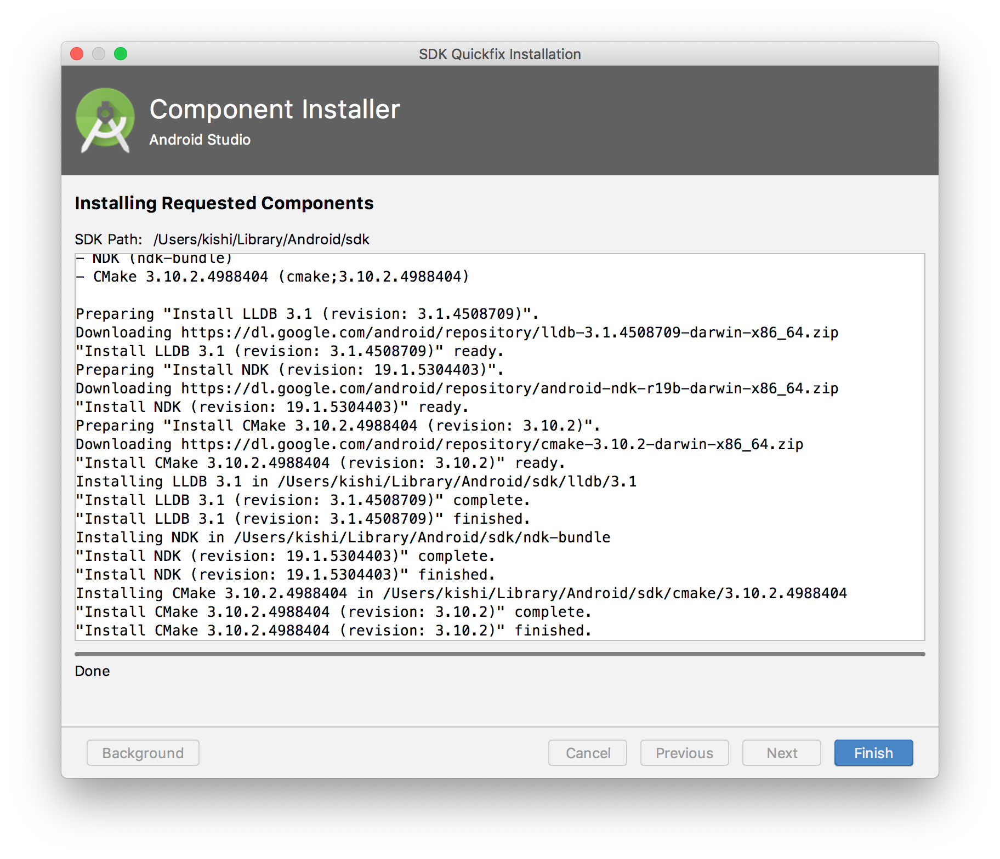
1.3 Set environment variables
set -x ANDROID_HOME ~/Library/Android/sdk set -x NDK_HOME $ANDROID_HOME/ndk-bundle
1.4 Add targets
仮想デバイスと対象デバイスのプラットフォーム1を追加。
対象デバイスはGoogle Pixel 3で、このデバイスに該当するプラットフォームは armv7-linux-androideabi (ARMv7 Android)。
仮想デバイスのプラットフォームは x86_64-linux-android 。
$ rustup target add armv7-linux-androideabi x86_64-linux-android
1.5 Create Rust library
プロジェクトを作成。
$ mkdir ~/.own/srcs/Rust/Android $ cd ~/.own/srcs/Rust/Android $ cargo new greetings --lib $ cd greetings
1.6 クロスコンパイル
スタンドアローン版NDKを作成。
$ mkdir NDK
$ {$NDK_HOME}/build/tools/make_standalone_toolchain.py --api 28 --arch arm --install-dir NDK/arm
$ {$NDK_HOME}/build/tools/make_standalone_toolchain.py --api 28 --arch x86 --install-dir NDK/x86
各々のコマンドで以下のワーニングが表示された。
WARNING:__main__:make_standalone_toolchain.py is no longer necessary. The
$NDK/toolchains/llvm/prebuilt/darwin-x86_64/bin directory contains target-specific scripts that perform the same task. For example, instead of:
$ python $NDK/build/tools/make_standalone_toolchain.py \
--arch arm --api 28 --install-dir toolchain
$ toolchain/bin/clang++ src.cpp
Instead use:
$ $NDK/toolchains/llvm/prebuilt/darwin-x86_64/bin/armv7a-linux-androideabi28-clang++ src.cpp
WARNING:__main__:make_standalone_toolchain.py is no longer necessary. The
$NDK/toolchains/llvm/prebuilt/darwin-x86_64/bin directory contains target-specific scripts that perform the same task. For example, instead of:
$ python $NDK/build/tools/make_standalone_toolchain.py \
--arch x86 --api 28 --install-dir toolchain
$ toolchain/bin/clang++ src.cpp
Instead use:
$ $NDK/toolchains/llvm/prebuilt/darwin-x86_64/bin/i686-linux-android28-clang++ src.cpp
クロスコンパイルの設定。
$ mkdir .cargo
[target.armv7-linux-androideabi] ar = "NDK/arm/bin/arm-linux-androideabi-ar" linker = "NDK/arm/bin/arm-linux-androideabi-clang" [target.x86_64-linux-android] ar = "NDK/x86/bin/x86_64-linux-android-ar" linker = "NDK/x86/bin/x86_64-linux-android28-clang"
パスはプロジェクトルートを基点とした相対パス。
$ cargo build --target armv7-linux-androideabi --release $ cargo build --target x86_64-linux-android --release
$ cd ~/AndroidStudioProjects/Greetings/app/src/main
$ mkdir -p jniLibs/{armeabi,x86}
$ cd jniLibs/armeabi
$ ln -sfv ~/.own/srcs/Rust/Android/greetings/target/armv7-linux-androideabi/release/libgreetings.so$ cd ../x86
$ ln -sfv ~/.own/srcs/Rust/Android/greetings/target/x86_64-linux-android/release/libgreetings.so